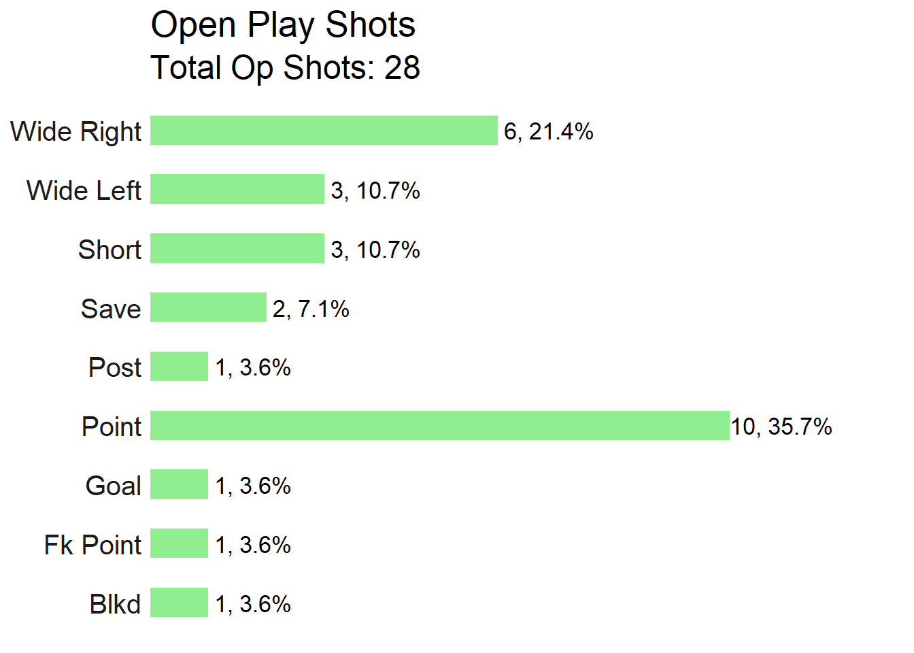
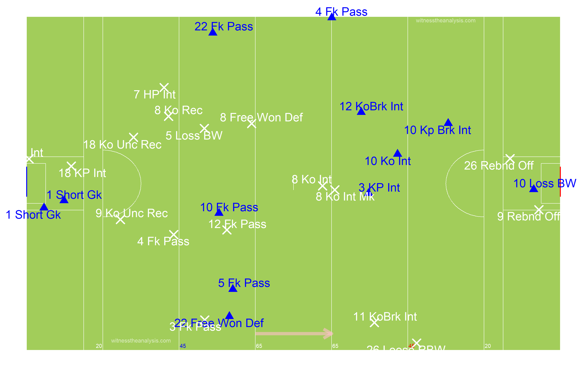
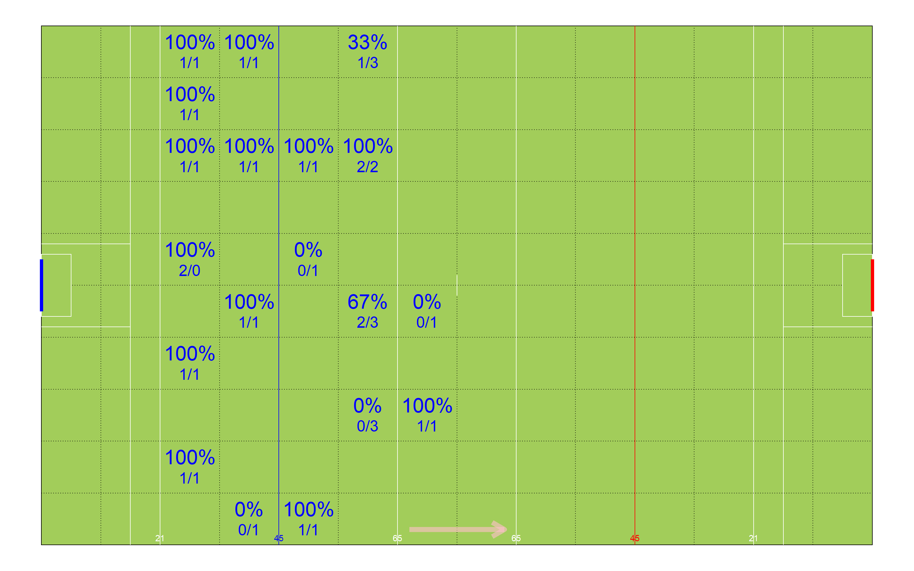
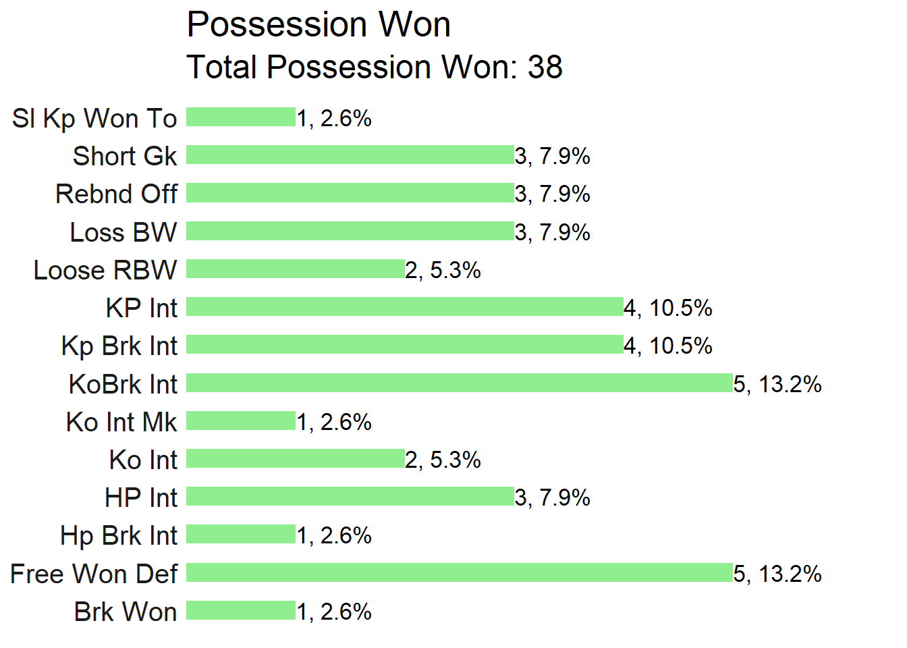
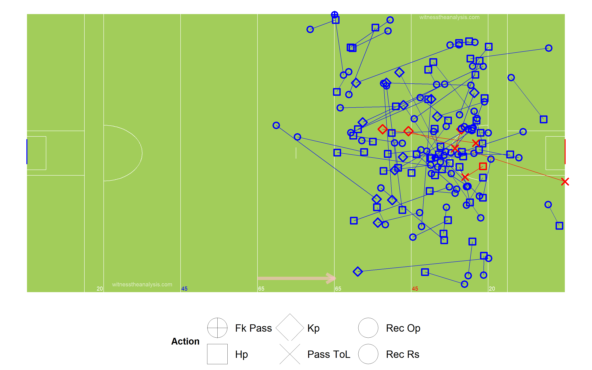
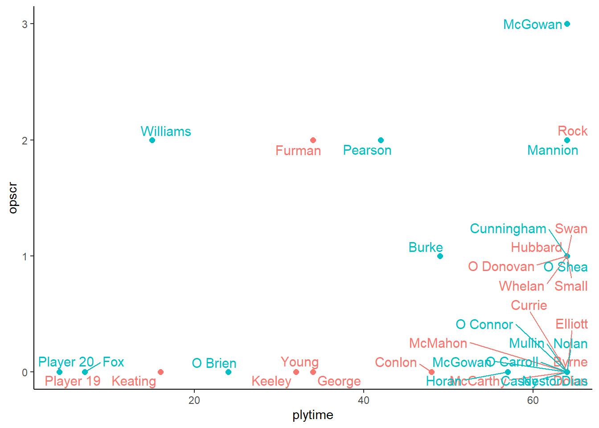

Ballymun (0.14) vs Kilmacud Crokes (2.13)
Dublin Senior Football Championship
13/04/2019
#Summary
| Ballymun | Crokes |
|---|---|
| Rock (0-2, 0-5fk) | Mannion (1-0pk, 0-2) |
| Furman (0-2) | Pearson (0-2) |
| Swan (0-1) | Burke (0-1,0-2fk) |
| Whelan (0-1) | A McGowan (0-3) |
| Small (0-1) | Cunningham (0-1) |
| Hubbard (0-1) | O Shea (0-1) |
| O Donovan (0-1) | Williams (1-1) |
| Team | Score.Eff. | Shots.PerPoss | Scores.PerPoss | Op.Scr.PP | Fk.Score. | Ko.Won.. |
|---|---|---|---|---|---|---|
| Ballymun | 60% | 44% | 28% | 18% | 71% | 67% |
| Crokes | 44% | 64% | 27% | 22% | 40% | 88% |

#By Period ##Ballymun
##Crokes

#Starting Line Up ##Ballymun
##Kilmacud
#Scoring Timeline
#Score Differential
#Average Position by Action ##Ballymun ###Game
###Period
##Crokes ###Game
###Period
#Areas of Play by Possession ##Ballymun
##Crokes
#Path of Possession
##Ballymun
##Crokes
#Ballymun (All Actions)
#Crokes (All Actions)
#Open Play Shots - Location & Outcome
##Ballymun
##Shot Efficiency - Ballymun
##Crokes

##Shot Efficiency - Crokes
#All Shots - Location & Outcome ##Ballymun
##Crokes
#All Shots Origin by Possession ##Ballymun (Blue = Score)
##Crokes (Blue = Score)
#Open Play Shot Origin by Phase ##Ballymun (Blue = Score)
##Crokes (Blue = Score) 
#Kick Outs ##Ballymun
##Kickout Efficiency 
##Kickout Network - Ballymun
##Crokes
##Kickout Efficiency
##Kickout Network - Crokes
#Turn overs/Possession Won
##Ballymun
##Crokes

#Frees Won ##Ballymun
##Crokes

#Frees Loss ##Ballymun
##Crokes

#Passing
##All Passes - Ballymun
##All Passes - Crokes
#Passes into 45 ##Ballymun
##Crokes
#Passes Inside Opp 65 ##Ballymun
##Crokes

#Total Posessions per Player ##Ballymun
##Crokes
##Posessions Per Playing Time
##Open Play Shots vs Play Time
##Open Play Scores vs Play Time 
##Open Play Shots vs Open Play Score
#Player Shot Involvement ##Ballymun
##Crokes
#Player Score Involvement ##Ballymun
##Crokes
| Team | Poss | Phase | All.Shots | All.Scores | Shots.PerPoss | Scores.PP | Shots.Op | Scores.Op | Score.Eff.. | Op.Scores.PP |
|---|---|---|---|---|---|---|---|---|---|---|
| Ballymun | 50 | 67 | 22 | 14 | 44% | 28% | 15 | 9 | 60% | 18% |
| Crokes | 55 | 69 | 35 | 15 | 64% | 27% | 27 | 12 | 44% | 22% |
| Team | Poss Time | Poss Freq | Shot Freq | Scr Freq | Ave Poss Shot | Ave Phase Shot | Ave Poss Scr | Ave Phase Scr | Ave Act Sht | Ave Act Scr |
| Ballymun | 00:24:14 | 00:01:17 | 00:02:55 | 00:04:34 | 00:00:24 | 00:00:16 | 00:00:23 | 00:00:17 | 13.05 | 12.64 |
| Crokes | 00:30:03 | 00:01:10 | 00:01:50 | 00:04:16 | 00:00:35 | 00:00:26 | 00:00:21 | 00:00:14 | 11.24 | 10.67 |
| Team | ply | opshots | Totteamshot | opscr | Totteamscr | convrate |
|---|---|---|---|---|---|---|
| Ballymun | Currie | 0 | 0% | 0 | 0% |
|
| Ballymun | Conlon | 0 | 0% | 0 | 0% |
|
| Ballymun | Dolan | 0 | 0% | 0 | 0% |
|
| Ballymun | McMahon | 0 | 0% | 0 | 0% |
|
| Ballymun | Keeley | 0 | 0% | 0 | 0% |
|
| Ballymun | Young | 0 | 0% | 0 | 0% |
|
| Ballymun | Hubbard | 1 | 7% | 1 | 14% | 100% |
| Ballymun | McCarthy | 0 | 0% | 0 | 0% |
|
| Ballymun | Elliott | 0 | 0% | 0 | 0% |
|
| Ballymun | Whelan | 2 | 13% | 1 | 14% | 50% |
| Ballymun | Rock | 4 | 27% | 2 | 29% | 50% |
| Ballymun | Swan | 1 | 7% | 1 | 14% | 100% |
| Ballymun | O Donovan | 3 | 20% | 1 | 14% | 33% |
| Ballymun | Small | 2 | 13% | 1 | 14% | 50% |
| Ballymun | Byrne | 0 | 0% | 0 | 0% |
|
| Ballymun | Furman | 2 | 13% | 2 | 29% | 100% |
| Ballymun | George | 0 | 0% | 0 | 0% |
|
| Ballymun | Keating | 0 | 0% | 0 | 0% |
|
| Ballymun | Player 19 | 0 | 0% | 0 | 0% |
|
| Team | Possession.Time..s. | Shot | Score | Start.Area | Shot.1 | Score.1 | Start.Type | Shot.2 | Score.2 |
|---|---|---|---|---|---|---|---|---|---|
| Ballymun | 0-9 | 2 | 2 | Def | 15 | 0 | PW | 14 | 8 |
| Ballymun | 10-19. | 8 | 4 | Def Mid | 2 | 3 | Ko | 8 | 6 |
| Ballymun | 20-29 | 5 | 4 | Att Mid | 4 | 1 | |||
| Ballymun | 30-39 | 4 | 2 | Att | 1 | 8 | |||
| Ballymun | 40-49 | 2 | 2 | ||||||
| Ballymun | 50-59 | 1 | 0 | ||||||
| Ballymun | 60-69 | 0 | 0 | ||||||
| Ballymun | 70+ | 0 | 0 | ||||||
| Team | Possession Time (s) | Shot | Score | Start Area | Shot | Score | Start Type | Shot | Score |
| Crokes | 0-9 | 9 | 5 | Def | 17 | 7 | PW | 26 | 11 |
| Crokes | 10-19. | 5 | 4 | Def Mid | 4 | 1 | Ko | 9 | 4 |
| Crokes | 20-29 | 6 | 4 | Att Mid | 6 | 4 | |||
| Crokes | 30-39 | 5 | 1 | Att | 8 | 3 | |||
| Crokes | 40-49 | 3 | 0 | ||||||
| Crokes | 50-59 | 1 | 0 | ||||||
| Crokes | 60-69 | 3 | 0 | ||||||
| Crokes | 70+ | 3 | 1 |
| Team | ply | opshots | Totteamshot | opscr | Totteamscr | convrate |
|---|---|---|---|---|---|---|
| Crokes | Nestor | 0 | 0% | 0 | 0% |
|
| Crokes | Nolan | 0 | 0% | 0 | 0% |
|
| Crokes | McGowan | 3 | 11% | 3 | 30% | 100% |
| Crokes | O Shea | 3 | 11% | 1 | 10% | 33% |
| Crokes | O Connor | 0 | 0% | 0 | 0% |
|
| Crokes | O Carroll | 0 | 0% | 0 | 0% |
|
| Crokes | McGowan | 1 | 4% | 0 | 0% | 0% |
| Crokes | Dias | 1 | 4% | 0 | 0% | 0% |
| Crokes | Casey | 1 | 4% | 0 | 0% | 0% |
| Crokes | Cunningham | 2 | 7% | 1 | 10% | 50% |
| Crokes | Mannion | 5 | 19% | 2 | 20% | 40% |
| Crokes | Horan | 1 | 4% | 0 | 0% | 0% |
| Crokes | Pearson | 4 | 15% | 2 | 20% | 50% |
| Crokes | Mullin | 1 | 4% | 0 | 0% | 0% |
| Crokes | Burke | 2 | 7% | 1 | 10% | 50% |
| Crokes | O Brien | 1 | 4% | 0 | 0% | 0% |
| Crokes | Williams | 2 | 7% | 2 | 20% | 100% |
| Crokes | Fox | 0 | 0% | 0 | 0% |
|
| Crokes | Player 20 | 0 | 0% | 0 | 0% |
|
#Zones Frequency ##Ballymun
##Crokes